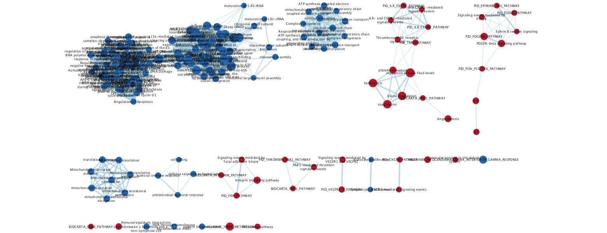
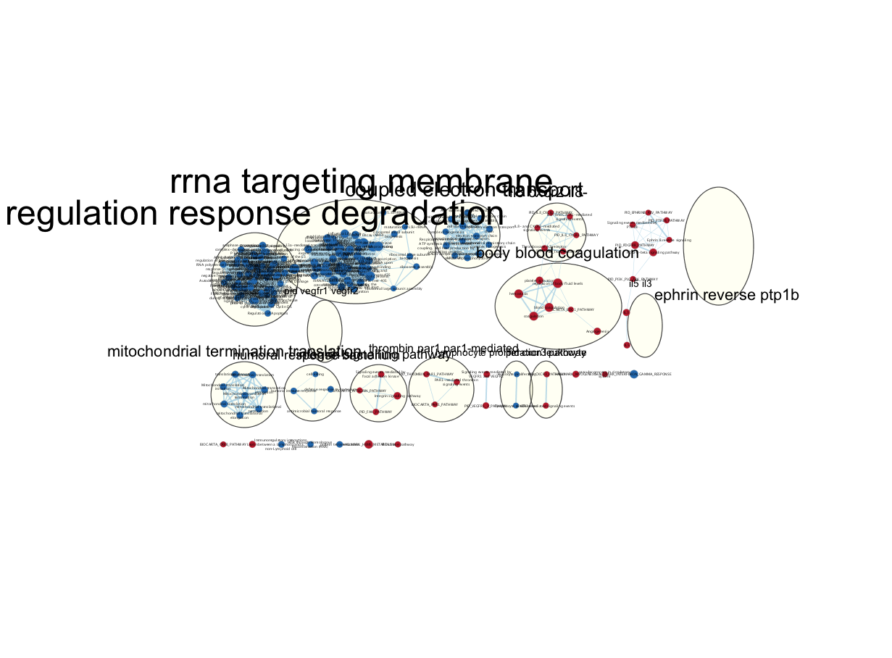

RNA-Seq to Enrichment Map - R Notebook
Table of Contents
- A. Overview
- B. Sample Study
- C. Data Pre-Processing
- D. Differential Expression Testing
- E. Gene Set Enrichment Analysis
- F. Enrichment Map
A. Overview
Section TODOs
- Install software and package dependencies
This R Notebook documents a comparison mRNA levels between two conditions and uses this information to identify and then visualize pathway-level differences. In particular, you will use convert RNA-Seq count data into a single ranked list where genes are ordered according to their differential expression. Enriched pathways from this list are distilled using Gene Set Enrichment Analysis (GSEA) then visualized as a Cytoscape Enrichment Map.
Software requirements
We will be using the following software and packages along the way.
- R (>= 3.2.5)
- BiocInstaller (>=1.24.0)
- SummarizedExperiment (>= 1.2.3)
- edgeR (>= 3.14.0)
- GenomicRanges (>= 1.26.4)
- IRanges (>= 2.8.2)
- biomaRt (>= 2.30.0)
- devtools (>=1.13.3)
- r2cytoscape (Commit 78c068f629)
- Java (v8)
- Gene Set Enrichment Analysis (GSEA) - Java Jar file (3.0)
- Cytoscape (3.5.1)
GSEA
After registering, login then download the GSEA Java Jar file (e.g. gsea-3.0.jar). For the purposes of this notebook, we will assume the GSEA path is /Users/username/bin/gsea-3.0.jar.
Cytoscape
After installing Cytoscape you’ll need to load in the Enrichment Map app. Do this through the Apps -> App Manager in the toolbar.
- EnrichmentMap (3.0.0)
For subsequent clustering and automated labelling of gene set themes, you should consider installing the following apps:
- Clustermaker2 (1.1.0)
- WordCloud (3.1.0)
- AutoAnnotate (1.1.0)
B. Sample Study
Section To Dos
- Familiarize yourself with study data and related files
In this workflow we will use expression data collected in a study by Myron G. Best and colleagues 1 whose aim was to differentiate blood platelets from healthy donors (HD) to those diagnosed with a breast cancer (BrCa) towards a proof-of-principle for blood-based cancer diagnosis.
Rationale
The primary physiological role of platelets is to sense and accumulate at the sites of damaged endothelial tissue and initiate a blood clot to mitigate and vessel leakage2. Previous observations are consistent with the notion that platelets have close contact with cancer cells - a process termed ‘education’ - and may play a role in their metastatic potential3. Diversity in tumour-educated platelets (TEP) could be clinically relevant if they enable discrimination between different stages of a malignancy.
RNA-Seq Data
Best et al. collected blood platelets from 55 HD and from 39 individuals with BrCa and subjected these samples to RNA-sequencing. Herein, we will be restricting our attention to a subset of 5 patient samples from each class. The metadata for the RNA-Seq files is contained in a file named tep_rnaseq_metadata.txt which lists RNA-Seq data filenames (‘id’) and the ‘class’ of each patient sample (Table I).
### Declare general file directory paths
base_dir <- getwd()
data_dir <- file.path(base_dir, "data")
output_dir <- file.path(base_dir, "output")
dir.create(output_dir, showWarnings = FALSE)
### Declare paths to RNA-Seq (meta)data files
tep_rnaseq_metadata <- file.path(data_dir, "tep_rnaseq_metadata.txt")
tep_rnaseq_filelist <- c(file.path(data_dir, "MGH-BrCa-H-74_htsqct.txt"),
file.path(data_dir, "MGH-BrCa-H-68_htsqct.txt"),
file.path(data_dir, "MGH-BrCa-H-66_htsqct.txt"),
file.path(data_dir, "MGH-BrCa-H-59_htsqct.txt"),
file.path(data_dir, "MGH-BrCa-H-11_htsqct.txt"),
file.path(data_dir, "HD-5_htsqct.txt"),
file.path(data_dir, "HD-4_htsqct.txt"),
file.path(data_dir, "HD-3-1_htsqct.txt"),
file.path(data_dir, "HD-2-1_htsqct.txt"),
file.path(data_dir, "HD-1_htsqct.txt"))Table I. Patient TEP RNA-Seq metadata (tep_rnaseq_metadata.txt)
tep_rnaseq_metadata_df <- read.table(tep_rnaseq_metadata,header = TRUE)
knitr::kable(tep_rnaseq_metadata_df)| id | class |
|---|---|
| MGH-BrCa-H-74_htsqct.txt | BrCa |
| MGH-BrCa-H-68_htsqct.txt | BrCa |
| MGH-BrCa-H-66_htsqct.txt | BrCa |
| MGH-BrCa-H-59_htsqct.txt | BrCa |
| MGH-BrCa-H-11_htsqct.txt | BrCa |
| HD-5_htsqct.txt | HD |
| HD-4_htsqct.txt | HD |
| HD-3-1_htsqct.txt | HD |
| HD-2-1_htsqct.txt | HD |
| HD-1_htsqct.txt | HD |
Each RNA-Seq measurement is represented as a tabular text file that, in this instance, contains 57 736 rows: The first column holds an Ensembl ID representing a region of the human genome and the second column a read count for transcripts mapped to that Ensembl ID. All of this is typically taken care of by your sequencing facility. An excerpt of raw data for sample HD-1_htsqct.txt is shown below in Table II.
Table II. Excerpt of RNA-Seq file HD-1_htsqct.txt
index_HD_1_htsqct <- grepl("HD-1_htsqct.txt", tep_rnaseq_filelist)
rnaseq_HD_1_htsqct <- read.table(tep_rnaseq_filelist[index_HD_1_htsqct],
check.names=FALSE)
knitr::kable(head(rnaseq_HD_1_htsqct), col.names=c("",""))| ENSG00000000003 | 0 |
| ENSG00000000005 | 0 |
| ENSG00000000419 | 100 |
| ENSG00000000457 | 6 |
| ENSG00000000460 | 11 |
| ENSG00000000938 | 159 |
C. Data Pre-Processing
Section To Dos
- Perform RNA-Seq data gene ID mapping
- Merge RNA-Seq data into a single R object
At the end of this section we wish to have the RNA-Seq data into an R data strcuture that we can more easily pipe into our differential gene expression testing procedures. Because of the numerous formats and states that raw RNA-Seq data can present itself, you may require a customized approach.
Gene identifier mapping
Our pathway enrichment analysis in GSEA identifies gene sets that are enriched in gene expression data. We will be using candidate gene sets named with the HGNC approved symbol. Since our RNA-Seq data use Ensembl identifiers (Table II) we will need to ‘map’ these to their corresponding HGNC symbol. If it is not possible to perform this mapping, we simply omit the gene. Also, beware of duplicates.
RNA-Seq data merging
We will take the individual RNA-Seq data files and merge them and any associated metadata into a single object, the SummarizedExperiment4.
A SummarizedExperiment stores experimental assays as a rectangular array whose rows correspond to the (genomic) ranges and whose columns correspond to the different samples. The SummarizedExperiment class stores metadata on the rows and columns. Metadata on the samples usually include experimental or observational covariates … Row metadata comprise the start and end coordinates of each feature and the identifier of the containing polymer, for example, the chromosome name.
We offload the above work onto an R function merge_data and its helpers that perform the required ID-mapping and data merging and returns a single SummarizedExperiment instance.
library("SummarizedExperiment")
#' Merge a set of files representing RNA sequencing gene counts
#'
#' 1. Default parameter is do nothing (already matching gene set ids)
#' 2. Optional parameter is to map from input to target namespace
#' Data files must be in tab-delimited format with two columns and no header. The classes are defined by a meta data file which is a tab-delimited text file with headers for the sample read 'id' and 'class'. Each row entry is a corresponding filename and class assignment. Only accepts pair-wise comparison so there must be exactly 2 classes.
#'
#' @param metadata_file A metadata file
#' @param species A character array indicating the species with which to fetch gene models from bioMart, If NULL this mapping will not be performed
#' @param source_name attribute (gene namespace) input
#' @param target_name attribute (gene namespace) desired
#'
#' @return A \code{\link[SummarizedExperiment]{SummarizedExperiment}}
#'
#' @export
merge_data <- function(metadata_file, species, source_name, target_name, ...) {
if(!is.character(species)) stop('species must be of class character')
i <- 0
class_order <- c()
meta <- create_meta(metadata_file)
filelist <- list(...)
if(is.list(filelist)){
filelist <- unlist(filelist)
}
if(dim(meta)[1] != length(filelist)) stop('Mismatch in files declared in metadata')
for(file in filelist){
if(!file.exists(file)) stop('invalid file/directory')
fname <- basename(file)
findex <- which(meta$id == fname)
if(length(findex) == 0) stop(paste0('Could not find match in metadata for ', fname))
class_order <- append(class_order, which(meta$id == fname))
input_df <- read.table(file,
check.names = FALSE,
stringsAsFactors = FALSE,
row.names = 1,
sep = "\t",
header = FALSE)
colnames(input_df) <- tools::file_path_sans_ext(fname)
if (i == 0){
data_df <- input_df
i = i + 1
next()
}
data_df <- merge(data_df,
input_df,
by = "row.names",
all = FALSE)
rownames(data_df) <- data_df$Row.names
data_df <- subset(data_df, select = -Row.names)
i = i + 1
}
gene_model <- get_gene_model( data_df, species, source_name, target_name )
if(is.null(gene_model)) stop( 'Could not reliably map input gene ids' )
# Sync up data rows (name, order) with gene_model returned
data_df_mapped <- map_names(data_df, gene_model, source_name)
# Create the SummarizedExperiment
colData <- data.frame(class=meta[class_order,]$class, row.names=colnames(data_df_mapped))
data_se <- SummarizedExperiment::SummarizedExperiment(
assays = list(counts = data.matrix(data_df_mapped)),
rowRanges = gene_model,
colData=colData)
return(data_se)
}
#' Create a data frame housing the RNA-seq metadata
#'
#' This function requires a tab-delimited text file with headers for
#' the sample read 'id' and 'class'. Each row entry is a corresponding filename
#' and class assignment. Only accepts pair-wise comparison so there must be
#' exactly 2 classes.
#'
#' @param metadata_file a path to a tab-delimited metadata file
#' @return A data frame
#'
#' @export
create_meta <- function(metadata_file) {
if(!file.exists(metadata_file)) stop('file does not exist')
if(!grepl(".txt$", metadata_file)){
stop("Uploaded file must be a tab-delimited .txt file!")
}
meta <- read.table(metadata_file,
check.names = FALSE,
colClasses = c("character", "factor"),
sep = "\t", header=TRUE)
if(!all.equal(colnames(meta), c("id", "class"))) stop('check column headers')
return(meta)
}
#' Normalize the data.frame nameswith those on a \code{\link[GenomicRanges]{GRanges}} object
#'
#' !!!!!!!!!!!!Alert alert alert ---- mapping between namespaces is not bijective.!!!!!!!!!!!!!
#'
#' Assumes that the gene_model has a meta-data column with source_name
#'
#' @param data_df the data frame to synchronize
#' @param gene_model the \code{\link[GenomicRanges]{GRanges}} object to match rows with
#'
#' @return A \code{\link[base]{data.frame}} with the same rows and names as the input \code{\link[GenomicRanges]{GRanges}}
#'
#' @export
map_names <- function(data_df, gene_model, source_name){
# Filter data_df for source_name
indices_data_df_source <- rownames( data_df ) %in% GenomicRanges::mcols( gene_model )[[source_name]]
subset_data_df_source <- data_df[ indices_data_df_source, ]
# Recreate the data frame
merged_data_df <- merge( subset_data_df_source,
data.frame( GenomicRanges::mcols( gene_model ), target_name = names(gene_model) ),
by.x = "row.names", by.y = source_name)
# merged data could still have duplicates!
# indices_merged_data_df_unique <- !duplicated(merged_data_df[[ "Row.names" ]])
# merged_data_df_unique <- merged_data_df[indices_merged_data_df_unique,]
# Set row names to target_name
row.names( merged_data_df ) <- merged_data_df$target_name
# Drop name columns
merged_data_df <- merged_data_df[, -which(names(merged_data_df) %in% c("Row.names", "target_name")) ]
# Reorder the rows to match
merged_data_df_reordered <- merged_data_df[ match(names(gene_model), rownames(merged_data_df)), ]
return(merged_data_df_reordered)
}
#' Retrieve the gene info
#'
#' !!!!!!!!!!!!Alert alert alert ---- mapping between namespaces is not bijective.!!!!!!!!!!!!!
#'
#' @param data_df the data frame of genes (rownames) and samples (colnames)
#' @param species the species (mouse, human)
#' @param source_name attribute (gene namespace) input
#' @param target_name attribute (gene namespace) desired
#'
#' @return A \code{\link[GenomicRanges]{GRanges}} having unique and valid target_name entries
#'
#' @export
get_gene_model <- function( data_df, species, source_name, target_name ){
if(missing(species) ||
!grepl("mouse", species, ignore.case = TRUE) &&
!grepl("human", species, ignore.case = TRUE)) stop("Species must be human or mouse")
dataset = switch(species,
mouse = "mmusculus_gene_ensembl",
human = "hsapiens_gene_ensembl")
mart_used = biomaRt::useMart("ENSEMBL_MART_ENSEMBL")
ensembl = biomaRt::useDataset(dataset, mart = mart_used)
attributes_available <- biomaRt::listAttributes(ensembl)
if( !source_name %in% attributes_available$name ||
!target_name %in% attributes_available$name ) stop("Invalid source/target name")
bm_info <- biomaRt::getBM(attributes = c("chromosome_name",
"start_position", "end_position", "strand",
source_name, target_name),
filters = source_name,
values = rownames(data_df),
mart = ensembl)
rowRanges <- GenomicRanges::GRanges(seqnames = paste0("chr", bm_info$chromosome_name),
ranges = IRanges::IRanges(start = bm_info$start_position, end = bm_info$end_position),
strand = bm_info$strand)
meta <- data.frame(bm_info[[source_name]])
colnames(meta) <- c(source_name)
GenomicRanges::mcols(rowRanges) <- meta
names(rowRanges) <- bm_info[[target_name]]
# Filter gene_model for valid target_name
# GRanges objects act like vectors for subsetting
gene_model <- rowRanges[ (names(rowRanges) != "") ]
gene_model <- gene_model[ !duplicated(GenomicRanges::mcols(gene_model)[[source_name]]) ]
gene_model <- gene_model[ !duplicated(names(gene_model)) ]
return(gene_model)
}Let’s perform the ID-mapping and data merging.
source_name <- "ensembl_gene_id"
target_name <- "hgnc_symbol"
species <- "human"
brca_hd_tep_se <- merge_data(
tep_rnaseq_metadata,
species,
source_name,
target_name,
tep_rnaseq_filelist)The result of the merge is a SummarizedExperiment object named brca_hd_tep_se.
brca_hd_tep_se## class: RangedSummarizedExperiment
## dim: 34996 10
## metadata(0):
## assays(1): counts
## rownames(34996): RNU6-871P MIR626 ... RNA5SP302 RNU6-179P
## rowData names(1): ensembl_gene_id
## colnames(10): MGH-BrCa-H-74_htsqct MGH-BrCa-H-68_htsqct ...
## HD-2-1_htsqct HD-1_htsqct
## colData names(1): classThe SummarizedExperiment package provides a number of helpful accessor functions to examine the data.
For instance, we can take a peek at the column (sample) metadata using the SummarizedExperiment::colData function.
knitr::kable(SummarizedExperiment::colData(brca_hd_tep_se))| class | |
|---|---|
| MGH-BrCa-H-74_htsqct | BrCa |
| MGH-BrCa-H-68_htsqct | BrCa |
| MGH-BrCa-H-66_htsqct | BrCa |
| MGH-BrCa-H-59_htsqct | BrCa |
| MGH-BrCa-H-11_htsqct | BrCa |
| HD-5_htsqct | HD |
| HD-4_htsqct | HD |
| HD-3-1_htsqct | HD |
| HD-2-1_htsqct | HD |
| HD-1_htsqct | HD |
Similarly, we can peek at an excerpt of the row metadata (i.e. GenomicRanges) using the SummarizedExperiment::rowRanges function.
brca_hd_tep_rowRanged_df <- as.data.frame(SummarizedExperiment::rowRanges(brca_hd_tep_se))
knitr::kable(head(brca_hd_tep_rowRanged_df))| seqnames | start | end | width | strand | ensembl_gene_id | |
|---|---|---|---|---|---|---|
| RNU6-871P | chr12 | 59450673 | 59450772 | 100 | - | ENSG00000251931 |
| MIR626 | chr15 | 41691585 | 41691678 | 94 | + | ENSG00000207766 |
| RNU6-35P | chr4 | 109992325 | 109992431 | 107 | + | ENSG00000207260 |
| MIR5694 | chr14 | 67441855 | 67441930 | 76 | - | ENSG00000265993 |
| RNU6-1157P | chr11 | 118593988 | 118594093 | 106 | + | ENSG00000207185 |
| RNU4-85P | chr3 | 19996803 | 19996925 | 123 | + | ENSG00000201545 |
dim(brca_hd_tep_rowRanged_df)## [1] 34996 6Note that we were only able to successfully map 34 996 unique HGNC symbols from the original set of Ensembl IDs.
Finally, we can peek at the assay data using the SummarizedExperiment::assay function.
knitr::kable(head(SummarizedExperiment::assays(brca_hd_tep_se)[["counts"]])[, c(1,2,6,7)])| MGH-BrCa-H-74_htsqct | MGH-BrCa-H-68_htsqct | HD-5_htsqct | HD-4_htsqct | |
|---|---|---|---|---|
| RNU6-871P | 0 | 0 | 0 | 0 |
| MIR626 | 0 | 0 | 0 | 0 |
| RNU6-35P | 0 | 0 | 0 | 0 |
| MIR5694 | 0 | 0 | 0 | 0 |
| RNU6-1157P | 0 | 0 | 0 | 0 |
| RNU4-85P | 0 | 0 | 0 | 0 |
D. Differential Expression Testing
Section To Dos
- GSEA input file dependencies
- Ranked list file (RNK): Single list of genes ordered according to the p-value derived form differential expression testing.
- Enrichment Map input file dependencies
- Text file for expression dataset (TXT): A file containing normalized gene expression values.
- Categorical class file (CLS): A description of each sample's class.
It will be convenient to generate the ranked list, expression and class files alongside the RNA-Seq data transformations. We will be using the edgeR Bioconductor package.
Filtering
RNA species with very low mapped read counts in a small number of samples can be highly variable. Consequently, we choose to ignore these in the search for differential expression. Best et al. use the rule of thumb that ‘genes with less than five (non-normalized) read counts in all samples were excluded from analyses’.
### Minimum number of mapped read counts per sample
min_counts <- 5
### Declare baseline (i.e. control) and test classes
baseline_class <- "HD"
test_class <- "BrCa"
comparison <- c(baseline_class, test_class)
brca_hd_tep_se_counts <- SummarizedExperiment::assays(brca_hd_tep_se)[["counts"]]
brca_hd_tep_se_group <- SummarizedExperiment::colData(brca_hd_tep_se)[["class"]]
### Find genes (rows) with a minimum number of counts
index_test_class <- brca_hd_tep_se_group == comparison[1]
index_baseline_class <- brca_hd_tep_se_group == comparison[2]
row_with_mincount <-
rowSums(edgeR::cpm(brca_hd_tep_se_counts) > min_counts) >=
min(sum(index_baseline_class), sum(index_test_class))
### Subset the original data accordingly
brca_hd_tep_dge_counts <- brca_hd_tep_se_counts[row_with_mincount,]
### Push the data into the edgeR::DGEList
brca_hd_tep_filtered_dge <-
edgeR::DGEList(counts = brca_hd_tep_dge_counts, group = brca_hd_tep_se_group)Note that our end product is a very convenient class, the edgeR::DGEList.
The main components of an DGEList object are a matrix counts containing the integer counts, a data.frame samples containing information about the samples or libraries, and a optional data.frame genes containing annotation for the genes or genomic features. The data.frame samples contains a column lib.size for the library size or sequencing depth for each sample. If not specified by the user, the library sizes will be computed from the column sums of the counts. For classic edgeR the data.frame samples must also contain a column group, identifying the group membership of each sample.
With this in mind, let’s take a look at the ‘counts’ component.
knitr::kable(head(brca_hd_tep_filtered_dge[["counts"]])[, c(1,2,5,6)])| MGH-BrCa-H-74_htsqct | MGH-BrCa-H-68_htsqct | MGH-BrCa-H-11_htsqct | HD-5_htsqct | |
|---|---|---|---|---|
| MAP4K5 | 255 | 520 | 854 | 238 |
| SAV1 | 167 | 189 | 323 | 34 |
| IRF3 | 5 | 5 | 23 | 22 |
| ZC3H11A | 80 | 145 | 181 | 16 |
| NUP88 | 24 | 13 | 49 | 45 |
| STXBP5-AS1 | 67 | 159 | 90 | 46 |
Similarly, we can peek inside the ‘samples’ component.
knitr::kable(brca_hd_tep_filtered_dge[["samples"]])| group | lib.size | norm.factors | |
|---|---|---|---|
| MGH-BrCa-H-74_htsqct | BrCa | 1010942 | 1 |
| MGH-BrCa-H-68_htsqct | BrCa | 1458995 | 1 |
| MGH-BrCa-H-66_htsqct | BrCa | 1104454 | 1 |
| MGH-BrCa-H-59_htsqct | BrCa | 375353 | 1 |
| MGH-BrCa-H-11_htsqct | BrCa | 1567897 | 1 |
| HD-5_htsqct | HD | 978816 | 1 |
| HD-4_htsqct | HD | 942170 | 1 |
| HD-3-1_htsqct | HD | 1006665 | 1 |
| HD-2-1_htsqct | HD | 771351 | 1 |
| HD-1_htsqct | HD | 1295886 | 1 |
Normalization
RNA for a sample can be sequenced to varying ‘depths’ in that the total number of sequence reads mapped to a gene for an individual sequencing run is not necessarily constant. What most concerns us is not the absolute counts of an individual RNA species coming out of a sequencing run but rather the proportion. In practical terms, we desire a fair-comparison of RNA counts between samples that takes into account variation in depth. Our recommendation is to use a normalization technique called Trimmed mean of M-values (TMM)5 that effectively standardizes counts between distinct sequencing runs by assuming that most genes are not expected to alter their expression.
brca_hd_tep_tmm_normalized_dge <- edgeR::calcNormFactors(brca_hd_tep_filtered_dge, method = "TMM")
knitr::kable(brca_hd_tep_tmm_normalized_dge[["samples"]])| group | lib.size | norm.factors | |
|---|---|---|---|
| MGH-BrCa-H-74_htsqct | BrCa | 1010942 | 0.8467126 |
| MGH-BrCa-H-68_htsqct | BrCa | 1458995 | 0.9171140 |
| MGH-BrCa-H-66_htsqct | BrCa | 1104454 | 1.0598800 |
| MGH-BrCa-H-59_htsqct | BrCa | 375353 | 0.9411707 |
| MGH-BrCa-H-11_htsqct | BrCa | 1567897 | 1.1394811 |
| HD-5_htsqct | HD | 978816 | 0.8057214 |
| HD-4_htsqct | HD | 942170 | 1.0404548 |
| HD-3-1_htsqct | HD | 1006665 | 0.9094940 |
| HD-2-1_htsqct | HD | 771351 | 1.1216675 |
| HD-1_htsqct | HD | 1295886 | 1.3247572 |
Note that the TMM-normalized DGEList called brca_hd_tep_tmm_normalized_dge has updated column norm.factors in component ‘samples’. This value will be used to determine an ‘effective library size’, leaving the raw counts untouched.
Text file for expression dataset (TXT)
At this point we can generate an expression file of normalized RNA counts where row names are gene symbols and column names are sample IDs. We will use this later to be able to display an expression heatmap for any enriched pathway in our Enrichment Map.
### Combine two data frames - gene metadata and sample counts
brca_hd_tep_tmm_normalized_mat <- edgeR::cpm(brca_hd_tep_tmm_normalized_dge, normalized.lib.size=TRUE)
meta_df <- data.frame(
NAME = rownames(brca_hd_tep_tmm_normalized_mat),
DESCRIPTION = rownames(brca_hd_tep_tmm_normalized_mat),
check.names = FALSE)
rownames(brca_hd_tep_tmm_normalized_mat) <- NULL
brca_hd_tep_tmm_normalized_expression_df <- data.frame(meta_df, brca_hd_tep_tmm_normalized_mat, check.names = FALSE)
### Write out
expression_dataset_path <- file.path(output_dir, "brca_hd_tep_tmm_normalized_expression.txt")
write.table(brca_hd_tep_tmm_normalized_expression_df,
quote=FALSE,
sep = "\t",
file=expression_dataset_path,
row.names = FALSE)We should have a file brca_hd_tep_tmm_normalized_expression.txt containing the following tab-delimited content:
brca_hd_tep_tmm_normalized_expression_file_df <- read.table(expression_dataset_path,
header = TRUE,
check.names = FALSE)
knitr::kable(head(brca_hd_tep_tmm_normalized_expression_file_df)[,c(1:4,8,9)])| NAME | DESCRIPTION | MGH-BrCa-H-74_htsqct | MGH-BrCa-H-68_htsqct | HD-5_htsqct | HD-4_htsqct |
|---|---|---|---|---|---|
| MAP4K5 | MAP4K5 | 297.905074 | 388.620956 | 301.78036 | 181.57979 |
| SAV1 | SAV1 | 195.098617 | 141.248771 | 43.11148 | 20.40222 |
| IRF3 | IRF3 | 5.841276 | 3.736740 | 27.89566 | 32.64356 |
| ZC3H11A | ZC3H11A | 93.460415 | 108.365459 | 20.28776 | 73.44800 |
| NUP88 | NUP88 | 28.038125 | 9.715524 | 57.05931 | 71.40778 |
| STXBP5-AS1 | STXBP5-AS1 | 78.273098 | 118.828331 | 58.32730 | 67.32734 |
Differential expression testing
In this step we perform a pair-wise comparison of RNA species counts in BrCa samples relative HD samples. The framework used to determine differential RNA expression is a ‘hypothesis-testing’ technique that entails:
- Declare the null hypothesis of no difference in RNA counts for each gene
- Define a null distribution that describes how RNA counts vary under circumstances where there is no association between RNA counts and class
- Calculate the probability (p-value) of observing a difference in RNA species counts at least as extreme as the one observed assuming the null hypothesis/distribution
- Perform multiple-testing correction
### Calculate variability (dispersions) in data
brca_hd_tep_fitted_commondisp_dge <- edgeR::estimateCommonDisp(brca_hd_tep_tmm_normalized_dge)
brca_hd_tep_fitted_tagwise_dge <- edgeR::estimateTagwiseDisp(brca_hd_tep_fitted_commondisp_dge)
### Perform differential expression testing (comparison is 'BrCa' vs 'HD')
brca_hd_tep_de_tested_dge <- edgeR::exactTest(brca_hd_tep_fitted_tagwise_dge, pair = comparison)
### Perform multiple-testing correction using Benjamini-Hockberg procedure
brca_hd_tep_de_tested_tt <- edgeR::topTags(brca_hd_tep_de_tested_dge,
n = nrow(brca_hd_tep_tmm_normalized_dge),
adjust.method = "BH",
sort.by = "PValue")The result of these transformations is a topTags object named brca_hd_tep_de_tested_tt. We can peek inside our result to view the list of genes ranked by p-value from differential expression testing.
knitr::kable(head(brca_hd_tep_de_tested_tt[["table"]]))| logFC | logCPM | PValue | FDR | |
|---|---|---|---|---|
| TRIM58 | 6.577953 | 7.818481 | 0 | 0 |
| ARHGAP45 | 6.612944 | 9.047699 | 0 | 0 |
| NCK2 | 5.679970 | 7.160183 | 0 | 0 |
| GAS2L1 | 5.946095 | 7.488178 | 0 | 0 |
| SPTB | 5.334870 | 7.041291 | 0 | 0 |
| ANKRD9 | 6.913215 | 6.214325 | 0 | 0 |
Rank list file (RNK)
At this stage, we can generate a rank list file where row names are gene symbols and a single column indicates the rank calculated as a function of their p-value. The larger the magnitude of the positive or negative rank, the rarer such an observation would be under the assumption of no association between class and RNA count.
### Rank by inverse of p-value taking into account 'sign' of change in BrCa (i.e. increase/decrease) relative to HD
brca_hd_tep_rank_values <- sign(brca_hd_tep_de_tested_tt[["table"]][["logFC"]]) * (-1) * log10(brca_hd_tep_de_tested_tt[["table"]][["PValue"]])
### Take into account log10(0) = -Inf
brca_hd_tep_rank_values_max <- max(brca_hd_tep_rank_values[ brca_hd_tep_rank_values != Inf ])
brca_hd_tep_rank_values_unique <- sapply( brca_hd_tep_rank_values,
function(x) replace(x, is.infinite(x),
sign(x) * (brca_hd_tep_rank_values_max + runif(1))) )
### Construct the data frame we wish place into a tabular file
genenames <- (rownames(brca_hd_tep_de_tested_tt[["table"]]))
brca_hd_tep_ranks_df <- data.frame(gene=genenames,
rank=brca_hd_tep_rank_values_unique,
stringsAsFactors = FALSE)
brca_hd_tep_ordered_ranks_df <- brca_hd_tep_ranks_df[order(brca_hd_tep_ranks_df[,2], decreasing = TRUE), ]
## Write out to file
rank_list_path <- file.path(output_dir, "brca_hd_tep.rnk")
write.table(brca_hd_tep_ordered_ranks_df,
quote=FALSE,
sep = "\t",
file=rank_list_path,
row.names = FALSE)Let’s peek at the top and bottom of our rank list saved in brca_hd_tep.rnk.
brca_hd_tep_ordered_ranks_file_df <- read.table(rank_list_path,
header = TRUE,
check.names = FALSE)
ranks_head <- head(brca_hd_tep_ordered_ranks_file_df, n=5)
rownames(ranks_head) <- NULL
knitr::kable(ranks_head)| gene | rank |
|---|---|
| TRIM58 | 34.46062 |
| ARHGAP45 | 32.99957 |
| NCK2 | 27.51070 |
| GAS2L1 | 23.96204 |
| SPTB | 23.90996 |
ranks_tail <- tail(brca_hd_tep_ordered_ranks_file_df, n=5)
rownames(ranks_tail) <- NULL
knitr::kable(ranks_tail)| gene | rank |
|---|---|
| MS4A1 | -11.50463 |
| CD79A | -11.53814 |
| MDM4 | -12.93184 |
| LYZ | -15.42705 |
| CD74 | -16.58382 |
Categorical class file (CLS)
This file will be used in the Enrichment Map so that we can differentiate (i.e. colour) those pathways ‘up-regulated’ in HD versus BrCa samples. The CLS format contains information about the sample classes (aka ‘condition’, ‘phenotype’) and assigns each sample to one class.
n_samples <- dim(brca_hd_tep_filtered_dge)[2]
n_classes <- 2
l1 <- paste(n_samples, n_classes, "1")
l2 <- paste("#", brca_hd_tep_de_tested_tt[["comparison"]][1], brca_hd_tep_de_tested_tt[["comparison"]][2])
l3 <- paste(brca_hd_tep_filtered_dge[["samples"]][["group"]], collapse = " ")
brca_hd_tep_cls <- rbind(l1, l2, l3)
### Write out to file
categorical_class_path <- file.path(output_dir, "brca_hd_tep.cls")
write(brca_hd_tep_cls,
file=categorical_class_path,
sep = "\t")The matrix brca_hd_tep_cls has the following format, assuming N samples:
| Total samples | Total classes | 1 | ||
| # | Class Name | Class Name | ||
| Sample 1 class | Sample 2 class | Sample 3 class | … | Sample N class |
rownames(brca_hd_tep_cls) <- NULL
brca_hd_tep_cls [,1] [1,] "10 2 1" [2,] "# HD BrCa" [3,] "BrCa BrCa BrCa BrCa BrCa HD HD HD HD HD"
E. Gene Set Enrichment Analysis
Section To Dos
- Obtain gene set database of candidates
- Run GSEA and obtain enriched gene sets
Gene set database
A gene set database is a text file that describes names of gene sets and one of more gene IDs that are in that gene set. We will be using the Gene Matric Transposed (GMT) format.
For your convenience, gene set database (GMT) files for human, mouse and rat are curated by the Bader lab on a regular basis from various sources. In this instance we provide Human_GOBP_AllPathways_no_GO_iea_August_01_2017_symbol.gmt which is a database of human gene sets that does not include terms inferred from electronic annotations (iea).
Run GSEA
GSEA comes as stand-alone Java program. Recall that we asked you to register, login and download the Java jar file to a convenient location (e.g. /Users/username/bin/gsea-3.0.jar). We will run GSEA via R with a set of options. Any of the supplied options can be customized.
In our GSEA run, the following relevant options have been specified:
- rpt_label - name of output folder for this run
- out - directory for results
- gmx - path to the gene set definition (gmt) file
- rnk - path to rank list file (RNK)
- nperm - number of permutations to generate null distribution
- set_min (set_max) - limits on number of genes for candidate gene sets
- scoring_scheme - how to calculate contributions of genes to a gene set’s score
- permute - for GSEA preranked you can only permute via gene_sets
- num - number of results to plot output file for
- rnd_seed - random seed to use
- zip_report - zip to output directory
- gui - when running from the commandline this needs to be false
doEnrichment <- FALSE
### Declare user-defined settings
gsea_jar_path <- file.path("/Users/jeffreywong/bin/gsea-3.0.jar")
gsea_rpt_label <- "tep_BrCa_HD_analysis"
gsea_analysis_name <- "tep_BrCa_HD"
gsea_out <- file.path(getwd(), "gsea_output")
gsea_gmx <- file.path(getwd(),
"data",
"PathwayCommons9.All.hgnc.names.gmt")
gsea_rank_list_path <- rank_list_path
gsea_num_permutations <- 1000
gsea_min_gs_size <- 15
gsea_max_gs_size <- 200
## Execute GSEA
command <- paste("java -cp", gsea_jar_path,
"-Xmx1G xtools.gsea.GseaPreranked",
"-rpt_label", gsea_analysis_name,
"-out", gsea_out,
"-gmx", gsea_gmx,
"-rnk", gsea_rank_list_path,
"-nperm", gsea_num_permutations,
"-set_min", gsea_min_gs_size,
"-set_max", gsea_max_gs_size,
"-collapse false",
"-scoring_scheme weighted",
"-permute gene_set",
"-num 100",
"-plot_top_x 20",
"-rnd_seed 12345",
"-zip_report false",
"-gui false",
">", paste("gsea_output_", gsea_rpt_label, ".txt", sep=""),
sep=" ")
if( doEnrichment == TRUE ){
system(command)
}In this case, we will have a directory tep_BrCa_HD.Preranked.XXXXXXXXXXXXX inside of the directory declared by in gsea_out that contains reports and figures generated during GSEA.
gsea_tep_BrCa_HD_analysis_directory <- list.files(path = gsea_out, pattern = "\\.GseaPreranked")Look for the following files:
index.html- This is a GSEA report that summarizes the analysis resultsgsea_report_for_na_pos_XXXXXXXXXXXXX.xls- The collection of gene sets enriched in the BrCa class. The ‘pos’ label originates from the way in which we compared the RNA-Seq classes, that is, BrCa relative to HDgsea_report_for_na_neg_XXXXXXXXXXXXX.xls- The collection of gene sets enriched in the HD class
Please refer to the GSEA documentation on ‘Interpreting GSEA Results’ for full details.
F. Enrichment Map
Section To Dos
- Obtain an Enrichment Map of the enriched pathways
Enrichment Map6 is a visualization analysis tool that organizes gene sets into an information-rich similarity network. The true power of Enrichment Map is that it is a visual display method that reduces complexity by grouping similar gene sets as defined by the number of overlapping genes.
Gene sets are represented as nodes whose radius is proportional to the number of genes. Edges indicate nodes with shared genes, where the thickness of the line is proportional to the degree of overlap. Finally, EM can use node color to represent other dimensions of the data, for example, gene sets enriched in different classes.
Cytoscape
Recall that we asked you to download and install Cytoscape (3.5.1) along with various apps. Open Cytoscape on your computer as this notebook will run commands to it through a custom package cytoscape-automation/r2cytoscape (0.0.3).
devtools::install_github("cytoscape/cytoscape-automation/for-scripters/R/r2cytoscape")
# Basic connection settings
port.number = 1234
base.url = paste("http://localhost:", toString(port.number), "/v1", sep="")Create Enrichment Map
We’re ready to declare our options for the Enrichment Map Cytoscape app.
### Construct path to GSEA results - 'edb' folder
### Ouptut from GSEA - update below to match your directory name
gsea_results <- file.path(gsea_out, gsea_tep_BrCa_HD_analysis_directory)
gsea_results_filename <- file.path(gsea_results, "edb", "results.edb")
### Define thresholds for GSEA enrichments
em_pvalue_gsea_threshold <- "0.01"
em_qvalue_gsea_threshold <- "0.01"
### Define thresholds for gene set similarity
em_similarity_threshold <- "0.375"
em_similarity_metric = "COMBINED"
#######################################
#create EM pvalue < 0.01 and qvalue < 0.01
#######################################
em_network_name <- paste(gsea_analysis_name, em_pvalue_gsea_threshold, em_qvalue_gsea_threshold, sep="_")
em_command = paste("enrichmentmap build analysisType=gsea",
"gmtFile=", gsea_gmx,
"pvalue=", em_pvalue_gsea_threshold,
"qvalue=", em_qvalue_gsea_threshold,
"similaritycutoff=", em_similarity_threshold,
"coefficients=", em_similarity_metric,
"ranksDataset1=", gsea_rank_list_path,
"enrichmentsDataset1=", gsea_results_filename,
"expressionDataset1=", expression_dataset_path,
sep=" ")
current_network_suid <- 0
if( doEnrichment == TRUE ){
current_network_suid <- r2cytoscape::commandRun(em_command)
response <- r2cytoscape::renameNetwork(em_network_name, network = current_network_suid)
} ## Error in curl::curl_fetch_memory(url, handle = handle): Failed to connect to localhost port 1234: Connection refusedLet’s take a peek at the Enrichment Map.
em_output <- file.path(output_dir, "em_output.png")
url_png <- paste(base.url, "networks", current_network_suid, "views/first.png", sep="/")
### Pause for Cytoscape to render
if( doEnrichment == TRUE ){
response <- httr::GET(url=url_png)
writeBin(response$content, em_output)
}
Often times, the complexity of an Enrichment Map can be reduced even further: Clusters of gene sets can be collapsed and annotated with a representative label gleaned from the characteristics of the individual gene sets.
### Auto-Annotate the Enrichment Map
aa_command = paste("autoannotate annotate-clusterBoosted clusterAlgorithm=MCL maxWords=3 network=", em_network_name, sep=" ")
### Enrichment Map command will return the suid of newly created network.
if( doEnrichment == TRUE ){
response <- r2cytoscape::commandRun(aa_command)
} Finally, let’s get a view of our annotated Enrichment Map.
em_output_aa <- file.path(output_dir, "em_output_aa.png")
url_png <- paste(base.url, "networks", current_network_suid, "views/first.png", sep="/")
### Pause for Cytoscape to render
if( doEnrichment == TRUE ){
Sys.sleep(30)
response <- httr::GET(url=url_png)
writeBin(response$content, em_output_aa)
}
Please refer to the full ‘RNA-Seq to Enrichment Map’ workflow for details.
References
-
Best MG et al. RNA-Seq of Tumor-Educated Platelets Enables Blood-Based Pan-Cancer, Multiclass, and Molecular Pathway Cancer Diagnostics. Cancer Cell. 2015 Nov 9; 28(5): 666–676 ↩
-
Semple JW. et al. Platelets and the immune continuum. Nat Rev Immunol. 2011 Apr;11(4):264-74 ↩
-
Gay LJ and Felding-Habermann B. Contribution of platelets to tumour metastasis. Nat Rev Cancer. 2011 Feb;11(2):123-34 ↩
-
Huber et al. Orchestrating high-throughput genomic analysis with Bioconductor. Nature Methods. 2015 Feb, 12(2) ↩
-
Robinson MD and Oshlack 1. A scaling normalization method for differential expression analysis of RNA-seq data. Genome Biology 2010, 11:R25 ↩
-
Daniele Merico et al. Enrichment Map: A Network-Based Method for Gene-Set Enrichment Visualization and Interpretation. PLoS One. 2010; 5(11): e13984 ↩